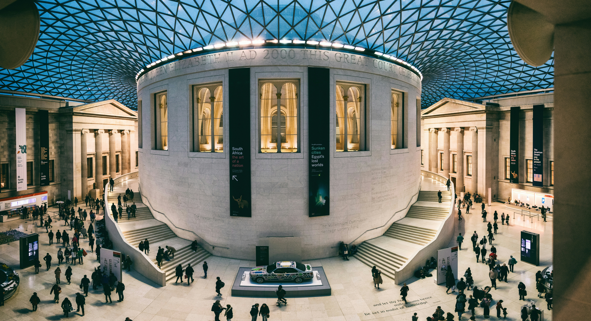
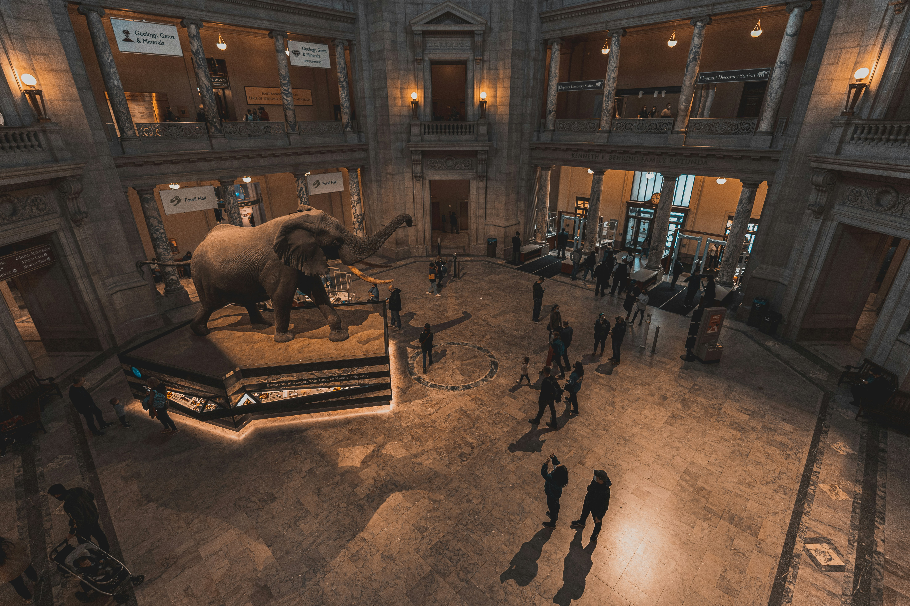
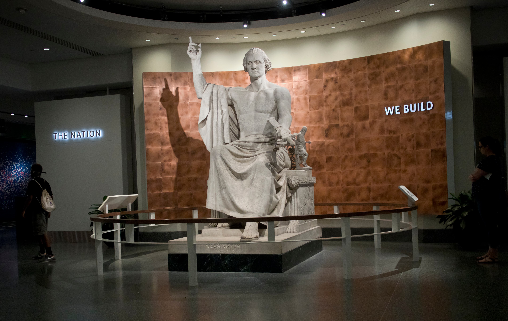

The British Museum has created guides referred to as “Object Trails” for visitors to use as a tool to identify objects to see at the museum. The tool separates object trails by time constraint (e.g. “One hour at the museum”), age level (e.g. “Twelve objects to see with children”), and topics of interest (e.g. “Tutankhamun: ancient and modern perspectives”). The creation of these guides helps provide structure for visitors and maximizes time spent on interests.

The National Museum of Natural History Museum in Washington D.C. has created a new pilot program for 2026 that entails turning “exhibits into an exploratory classroom.” Henry’s Highlights Program allows 6th-12th grade students to self explore exhibits using guided questions that prompt them to see specimens throughout four exhibits. Once the students answer their question, they can find a program staff member to learn more about a particular item or move onto a different question.

The National Museum of American History website contains “classroom resources” that have grade-appropriate lessons and activities that are explicitly linked to Common Core State Standards. For example, the “Learning with Primary Sources” lesson for Grades 6-8 and Grades 9-12 has detailed information about primary sources and has links to the specific requirements the lesson fulfills for the Common Core State Standards of Literacy in History/Social Studies.